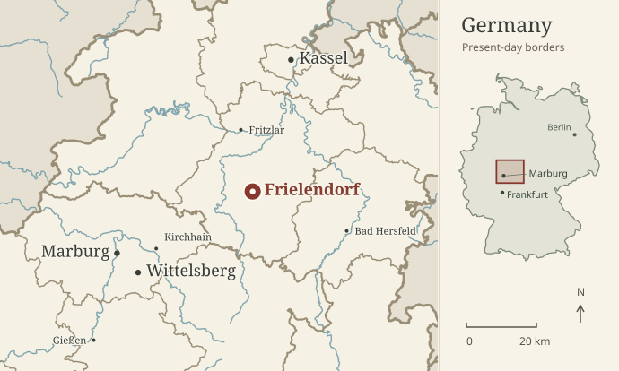

The Bachrachs in Frielendorf
Frielendorf lies about thirty miles northeast of Wittelsberg, in what is now Hesse. It had a larger Jewish community than most villages in the region. In 1858 it had 112 Jewish residents in twenty families, about fifteen percent of the village. The Bachrachs settled in Frielendorf later than the Baums did in Wittelsberg, and less survives about their early years there.

Jakob Bachrach and Beile Noa
Jakob Bachrach was born in 1776 in Hattenbach, about twenty-five miles from Frielendorf. Some Jews did have hereditary surnames before the 1808 Jérôme Napoleon decree, and Jakob probably bore the name Bachrach from birth. Bachrach is a form of Bacharach, the name of a town on the Rhine. Jewish families with the name appear in records as early as the fifteenth century.
Around 1813, Jakob settled in Frielendorf with his wife, Beile Noa (as in Beile, daughter of Noa), who was born around 1786. Her family probably took the surname Stern after the decree of 1808. In Frielendorf, Jakob made his living as a small-scale cattle dealer. The family register lists nine children for the couple, born over twenty years. We do not know how many survived childhood.

Jakob and Beile’s children were the first generation in their family to benefit from an 1816 law in Electoral Hesse that gave Jewish children the right to an elementary education and required them to attend. The law applied to daughters as well as sons. In villages without a Jewish elementary school, children attended the local Christian school for secular subjects and received their Jewish religious instruction separately.
Noa Bachrach and Hennel Speier
Jakob and Beile’s sixth child, born in 1821, was a boy they named Noa, the name of Beile’s father. In 1847 he married Hennel Speier, born around 1818 in Merzhausen. Noa probably attended a Jewish elementary school himself. The opportunity to learn a skilled trade was also opening to Jews of his generation.
Noa’s father probably cut and sold meat in the course of dealing cattle, without formal training or a butcher’s license. As guilds began admitting Jewish tradesmen, Noa was able to spend several years apprenticed to a butcher and qualify as a master butcher. This became the family trade, and his son and grandson would earn the same distinction.
Jakob Noa and the Frielendorf congregation
Noa and Hennel’s son Jakob Noa was born in 1853. Frielendorf had opened its own Jewish elementary school in 1843, ten years before his birth. He was the first in his line to go to school there.
Like his father, Jakob Noa became a master butcher. He also helped lead the local chevra, a Jewish religious society that worked alongside the synagogue. When the village lacked a religious teacher, Jakob taught. After the death of the congregation’s teacher, Lion, he also served as ritual slaughterer.


The two village families may have first been joined by marriage in 1881. Jakob Noa’s older sister Gittel was thirty-three when she married Jacob Baum of Wittelsberg. He had been widowed twice and was a brother of Elias, the cattle dealer who had inherited House No. 33. Three years later, Jakob Noa married Auguste “Gustel” Steinfeld of Josbach. Their son Samuel, Margot’s father, would know Gittel as his aunt. To Margot’s mother, Bertha Baum, Gittel was a great-aunt by marriage.

Gittel and Jakob Noa’s mother, Hennel, lived to see the family spread across four generations. On her ninety-sixth birthday, the German Orthodox Jewish newspaper Der Israelit marked the occasion with a short notice from Frielendorf. It counted seven children, twenty-seven grandchildren, and six great-grandchildren, and identified her as the oldest person in the village. Hennel lived to ninety-seven.